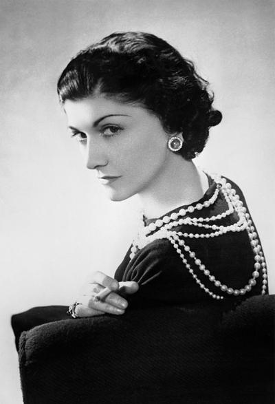

Gabrielle Chanel abre su primera Boutique en Deauville. A partir de 1913, comienza a vender una línea de ropa deportiva de punto, material que hasta entonces se había utilizado para fabricar ropa interior masculina. Este enfoque revolucionó la moda y la relación de las mujeres con su cuerpo. El éxito fue inmediato.
